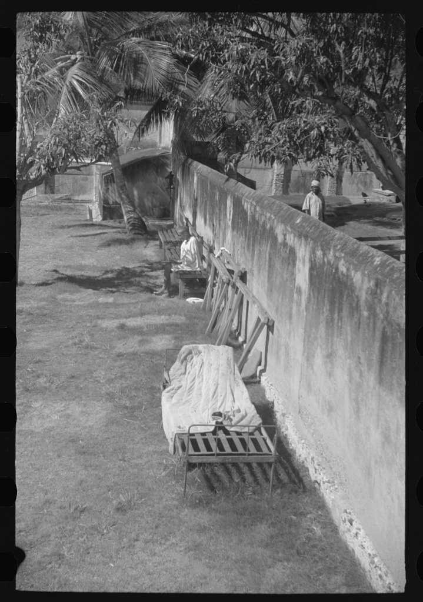

I knew I should be grateful to Mrs Guinea, only I couldn't feel a thing. If Mrs Guinea had given me a ticket to Europe, or a round-the-world cruise, it wouldn't have made one scrap of difference to me, because wherever I sat—on the deck of a ship or at a street cafe in Paris or Bangkok—I would be sitting under the same glass bell jar, stewing in my own sour air.
Sylvia Plath · The Bell Jar · p. 238